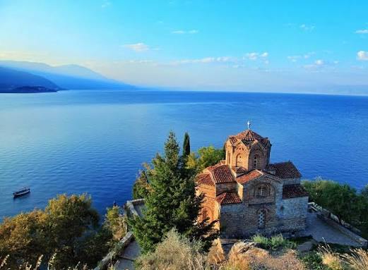

O Lago Ohrid tem idade estimada entre 2 e 5 milhões de anos, este é um dos corpos de água doce mais antigos e profundos de toda a Europa.
A famosa Igreja de São João em Kaneo é um dos cartões-postais mais icônicos da Macedônia do Norte. Localizada na cidade histórica de Ohrid, ela fica no alto de um penhasco rochoso com vista panorâmica para as águas cristalinas do Lago Ohrid.
A Baía dos Ossos é um museu a céu aberto, é uma reconstrução meticulosa de um assentamento pré-histórico de palafitas que existiu ali há mais de 3.000 anos.
A Ponte de Pedra de Escópia, ou a Ponte do Imperador Dusan, é uma ponte em forma de arco de alvenaria que atravessa o rio Vardar, em Escópia, capital da Macedônia.
